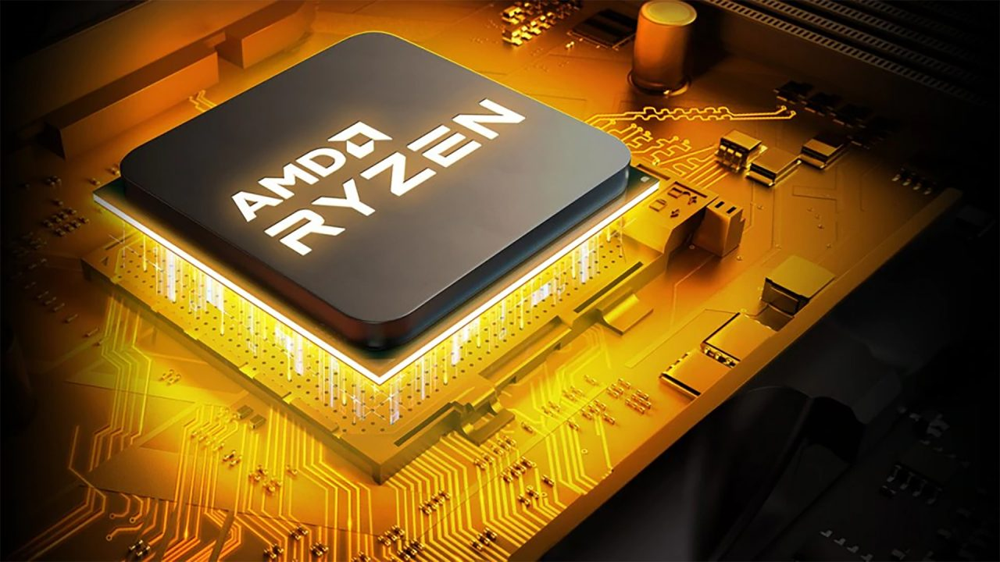

|  |
Advanced Micro Devices, Inc. (AMD) is an American multinational semiconductor company based in Santa Clara, California, that develops computer processors and related technologies for business and consumer markets. While it initially manufactured its own processors, the company later outsourced its manufacturing, a practice known as going fabless, after GlobalFoundries was spun off in 2009. AMD's main products include microprocessors, motherboard chipsets, embedded processors, graphics processors, and FPGAs for servers, workstations, personal computers, and embedded system applications. Advanced Micro Devices was formally incorporated by Jerry Sanders, along with seven of his colleagues from Fairchild Semiconductor, on May 1, 1969. Sanders, an electrical engineer who was the director of marketing at Fairchild, had, like many Fairchild executives, grown frustrated with the increasing lack of support, opportunity, and flexibility within the company. He later decided to leave to start his own semiconductor company, following the footsteps of Robert Noyce (developer of the first silicon integrated circuit at Fairchild in 1959) and Gordon Moore, who together founded the semiconductor company Intel in July 1968. |
|
As of 2022 the best AMD processors are the AMD Ryzen 9 5900X brings the biggest gen-on-gen jump in a single performance in years, making it a terrific upgrade. This latest release from AMD is not just a stronger processor across the board. It’s also an incredibly powerful processor for gaming and creative work full stop. Another is the AMD Ryzen 7 5800X3D is without question one of the best processors for gaming on the market. With incredible performance thanks to AMD's new 3D V-Cache technology, the 5800X3D punches way above its weight class and even bests the Core i9-12900K when it comes to gaming. |
|